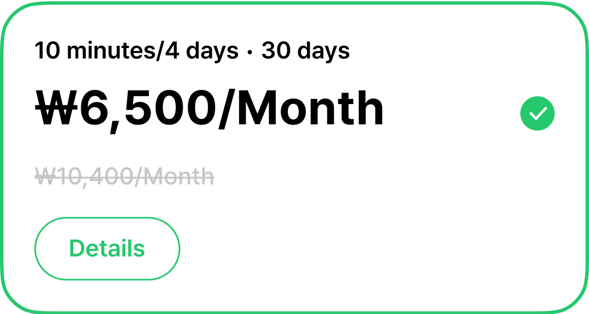
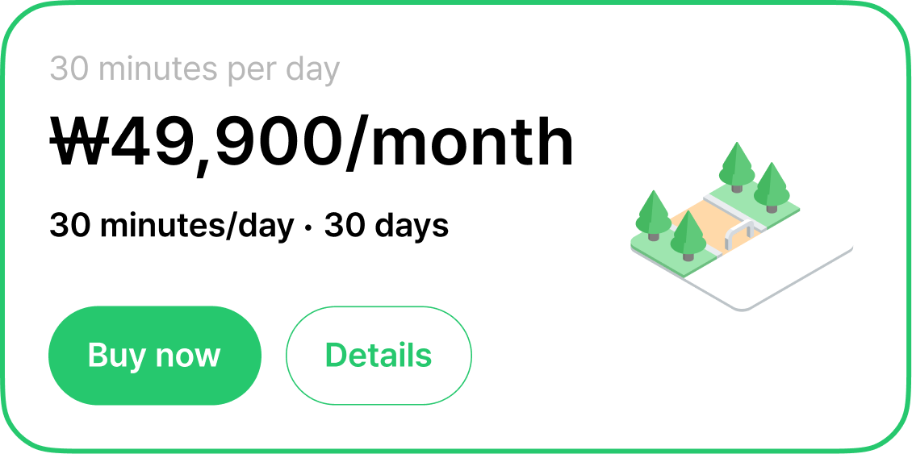

GCOO is South Korea's leading micromobility company with 2.5 million users worldwide. It provides rental electric scooters and bikes for both riders and delivery workers. GCOO is undergoing a major redesign to boost user retention. I spent 3 months on the product design team, focusing on re-designing the in-app store, which offers one-time and subscription passes.
GCOO overall user base is decreasing due to an outdated in-app store user workflow and a lack of optimization for its older audience. The layout of the store was previously not optimized due to a lack of a solid color scheme and very little instruction/direction.
The new layout design takes into consideration the level of popularity of each pass and displaying them in a more intuitive order. It provides descriptions of the store as well as more visuals to be easier on the eyes.
The most critical issue of the store was the card layout/design. Pass names and descriptions were potentially confusing to the user, as well as pricing and discounts. In addition, the existence of icons did not contribute to pass and were unecessary.
New designs take into consideration guiding user gaze towards different parts of the pass such as pricing, the buy now button, and the image icon. These are all meant to make the options more digestible to an older audience and an audience focussed on getting vital information about these passes as quickly as possible.
One of the most blatant issues is how, when paying, the dropdown disrupts user experience by moving the other card option when opening the dropdown. Dropdowns have a lot of information that is difficult to see/read for the average GCOO user.
New designs take advantage of overlays instead of dropdowns, providing the user with a cleaner and more streamlined method of viewing important pass information and purchasing GCOO products.